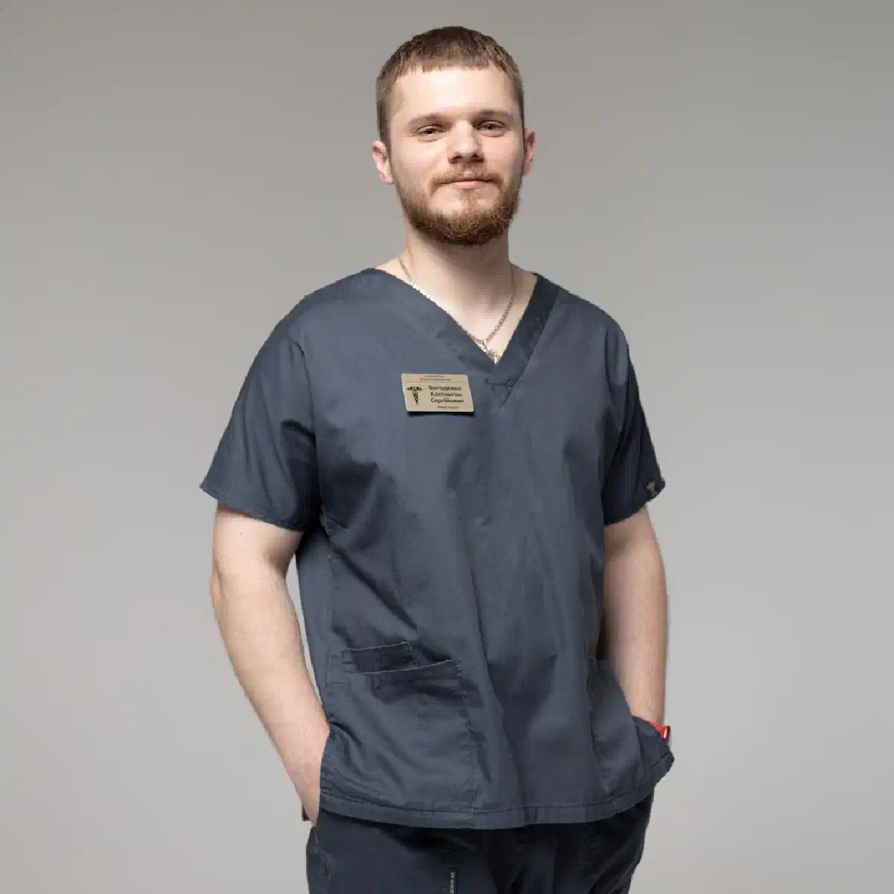

+38(068)
79 72 782
+38(068)
79 72 782Лечение алкогольного абстинентного синдрома в Харькове
Своевременная медицинская помощь и поддержка


Бесплатная консультация, работаем круглосуточно 24/7
Своевременная медицинская помощь и поддержка

Дата написания: 6 сент. 2026 г.
Последнее обновление: 7 сент. 2026 г.
Лечение алкогольного абстинентного синдрома в Харькове требуется людям, у которых после прекращения или резкого уменьшения употребления алкоголя появляются тремор, тревожность, потливость, бессонница, учащённое сердцебиение, тошнота и другие признаки синдрома отмены. Особенно часто такое состояние развивается после продолжительного или регулярного употребления спиртного. Тактика помощи зависит от тяжести симптомов и общего состояния человека. При относительно лёгкой абстиненции лечение иногда возможно амбулаторно или на дому после осмотра врача. При судорогах, галлюцинациях, выраженной спутанности сознания, сильном возбуждении или других опасных симптомах необходимо стационарное наблюдение.
Алкогольный абстинентный синдром — это комплекс симптомов, возникающих у человека с сформировавшейся зависимостью после прекращения или значительного уменьшения употребления алкоголя. Если необходимо вывести из запоя, важно учитывать, что резкое прекращение спиртного после длительного употребления может сопровождаться выраженным синдромом отмены. Организм постепенно адаптируется к регулярному присутствию алкоголя. Когда его поступление резко прекращается, нервная система некоторое время остаётся в состоянии повышенной активности. Именно с этим связаны многие проявления абстиненции. У одного человека синдром отмены проявляется тревожностью, потливостью и дрожью рук, у другого — выраженным возбуждением, нарушением сознания или судорожными приступами.
При продолжительном употреблении алкоголя происходят изменения в работе центральной нервной системы. Организм адаптируется к регулярному воздействию спиртного, поэтому после резкого прекращения употребления может развиваться синдром отмены. В такой ситуации доступная наркологическая помощь позволяет оценить тяжесть состояния, риск осложнений и определить, можно ли проводить лечение амбулаторно или на дому либо пациенту требуется стационар. Человек может ощущать внутреннее напряжение, тревожность, дрожь в руках, сердцебиение, выраженную потливость и испытывать трудности с засыпанием. Возможны колебания артериального давления, слабость и ухудшение общего самочувствия. Особенно важно срочно обращаться за медицинской помощью, если появляются судороги, галлюцинации, выраженная спутанность сознания, дезориентация, потеря сознания, сильное психомоторное возбуждение, затруднённое дыхание, боль в груди или быстрое ухудшение состояния. Чем продолжительнее и регулярнее было употребление алкоголя, тем внимательнее следует относиться к периоду его прекращения.
Первые симптомы синдрома отмены могут появляться спустя несколько часов после значительного уменьшения количества алкоголя или полного прекращения употребления. Человек может первоначально жаловаться на тревожность, слабость, тремор, потливость, тошноту и нарушение сна. В дальнейшем выраженность симптомов способна изменяться. Именно поэтому хорошее самочувствие сразу после прекращения употребления ещё не гарантирует, что состояние останется стабильным. После длительного запоя желательно оценивать пациента в динамике, особенно если ранее уже возникала тяжёлая абстиненция.
Проявления алкогольной абстиненции зависят от тяжести зависимости и индивидуальных особенностей организма. Если рассматривается вывод из запоя на дому Харьков, важно сначала оценить выраженность синдрома отмены и убедиться, что состояние пациента позволяет проводить помощь вне стационара. Наиболее типичны дрожание рук, потливость, повышенная тревожность, раздражительность, учащённое сердцебиение, нарушение сна, тошнота, слабость и головная боль. Также могут наблюдаться колебания артериального давления, снижение аппетита и выраженное внутреннее напряжение. При тяжёлом течении могут возникнуть судороги, галлюцинации, дезориентация и выраженное психомоторное возбуждение. В таких случаях домашний формат может быть небезопасен, поэтому требуется срочная медицинская оценка и решение вопроса о госпитализации.
Похмелье может возникнуть после употребления значительного количества алкоголя даже у человека без сформировавшейся зависимости. Если человек хочет прокапаться от похмелья, сначала важно оценить выраженность симптомов и понять, действительно ли требуется инфузионная терапия. При обычном похмелье чаще преобладают головная боль, жажда, слабость и тошнота. Алкогольный абстинентный синдром обычно связан с регулярным употреблением и развивается после уменьшения или прекращения алкоголя у человека, организм которого уже адаптировался к его постоянному поступлению. При абстиненции более характерны тремор, тревожность, потливость, бессонница, сердцебиение и другие признаки повышенной активности нервной системы. Различить эти состояния особенно важно после многодневного запоя, поскольку объём медицинской помощи и тактика лечения могут существенно отличаться.
Обращаться за медицинской оценкой желательно при выраженных симптомах или после продолжительного запоя, особенно если человек уже сталкивался с тяжёлым синдромом отмены. Не следует ждать появления судорог или галлюцинаций, если состояние постепенно ухудшается. Снятие абстинентного синдрома начинается с оценки тяжести состояния, измерения основных жизненных показателей и определения факторов риска. Чем выше вероятность осложнений, тем более интенсивного наблюдения требует пациент.
Первым этапом становится осмотр пациента. Врач уточняет продолжительность употребления алкоголя, время последнего приёма спиртного, предыдущие эпизоды абстиненции и наличие хронических заболеваний. Оцениваются сознание, давление, пульс, дыхание, уровень обезвоживания, выраженность тремора и психоэмоциональное состояние. После этого определяется объём лечения. Оно может включать поддерживающую терапию, коррекцию водно-электролитных нарушений и медицинское наблюдение. При появлении признаков тяжёлой абстиненции пациенту рекомендуется лечение в условиях стационара.
Медикаментозная терапия подбирается индивидуально и зависит от выраженности синдрома отмены, возраста, сопутствующих заболеваний и общего состояния пациента. Могут применяться:
Некоторые препараты, применяемые при выраженном синдроме отмены, требуют медицинского контроля, поскольку могут влиять на уровень сознания, давление и дыхание. Самостоятельно принимать сильнодействующие успокоительные, снотворные или сочетать их с алкоголем опасно.
Капельница от алкоголя в Харькове может использоваться как часть комплексного лечения, если у пациента имеются соответствующие показания. Инфузионная терапия помогает корректировать обезвоживание и отдельные водно-электролитные нарушения, однако сама по себе не устраняет все проявления синдрома отмены. Перед проведением процедуры врач должен оценить состояние пациента и определить необходимый объём жидкости. Особенно осторожно инфузии проводятся пациентам с заболеваниями сердца и почек, поскольку чрезмерное введение жидкости также может быть нежелательным.
Детоксикация от алкоголя и лечение абстиненции тесно связаны, но эти понятия не полностью идентичны. После прекращения употребления задача врача заключается не просто в попытке «очистить организм», а в стабилизации состояния и контроле синдрома отмены. В программу могут входить инфузионная терапия по показаниям, медицинское наблюдение и коррекция отдельных симптомов. После завершения острого периода важно оценить необходимость дальнейшего лечения алкогольной зависимости.
Продолжительность абстиненции индивидуальна. Она зависит от продолжительности употребления алкоголя, тяжести зависимости, состояния здоровья и предыдущих эпизодов синдрома отмены. У части пациентов основные симптомы постепенно уменьшаются в течение нескольких дней. При этом нарушения сна, слабость, тревожность и эмоциональная нестабильность могут сохраняться дольше. Нельзя оценивать тяжесть состояния только по тому, насколько хорошо человек чувствует себя сразу после первой процедуры. При усилении симптомов необходима повторная медицинская оценка.
Лечение абстинентного синдрома на дому может рассматриваться при относительно лёгком или умеренном состоянии после оценки врача. Пациент должен сохранять ясное сознание, иметь стабильные основные жизненные показатели и возможность соблюдать рекомендации. Домашний формат не подходит при тяжёлой абстиненции, высоком риске судорог, галлюцинациях, выраженном возбуждении или других признаках нестабильного состояния. Поэтому решение о домашнем лечении желательно принимать после медицинского осмотра, а не только по желанию пациента или родственников.
Стационар требуется пациентам, состояние которых необходимо контролировать постоянно. Вывод из запоя в стационаре может быть предпочтительным при тяжёлом синдроме отмены, судорожных приступах, галлюцинациях, выраженном психомоторном возбуждении или нарушении сознания. Дополнительным фактором риска являются серьёзные заболевания сердца, печени, почек и нервной системы. Стационар позволяет контролировать состояние пациента в динамике и своевременно корректировать терапию при его изменении.
Тяжёлая абстиненция потенциально опасна и не должна рассматриваться как обычное похмелье. Пациенту может потребоваться постоянное наблюдение, контроль сознания, дыхания, давления и сердечного ритма, а также интенсивная медикаментозная терапия. Особую опасность представляют судороги, галлюцинации и делириозное состояние. В таких случаях лечение дома без полноценного мониторинга может быть недостаточно безопасным.
Самостоятельный выход после длительного употребления связан с тем, что человек не всегда может заранее оценить тяжесть синдрома отмены. Попытки уменьшить симптомы новой дозой алкоголя способны продлить запой. Самовольный приём большого количества успокоительных или снотворных также может быть опасным. Вопрос как выйти из запоя без капельницы нельзя решать одинаково для всех. При лёгком состоянии врач может рекомендовать питьевой режим, питание и наблюдение, но при выраженной абстиненции необходима медицинская оценка. Особенно опасно оставаться без помощи при судорогах, галлюцинациях или быстро нарастающей спутанности сознания.
Да, судорожные приступы относятся к потенциально серьёзным осложнениям алкогольного синдрома отмены. Риск особенно важен у людей с длительной историей употребления или предыдущими эпизодами судорог при прекращении алкоголя. Судорожный приступ требует медицинской оценки даже в том случае, если после него человек быстро пришёл в сознание. При повторных судорогах или нарушении сознания необходимо обращаться за экстренной помощью.
Появление галлюцинаций, выраженной дезориентации или спутанности сознания после прекращения запоя является тревожным признаком. Такие симптомы могут указывать на тяжёлое течение синдрома отмены и требуют срочной медицинской помощи. Человек может перестать правильно ориентироваться во времени и месте, видеть или слышать то, чего нет, становиться тревожным или возбуждённым. Пытаться лечить подобное состояние только домашней капельницей небезопасно.
Дрожание рук является одним из распространённых проявлений алкогольной абстиненции. Если тремор небольшой и постепенно уменьшается, его оценивают вместе с другими симптомами. Сильная дрожь в сочетании с тахикардией и гипертонией, выраженной потливостью, тревожностью или бессонницей требует медицинской оценки. Не рекомендуется самостоятельно подавлять тремор с помощью больших доз успокоительных препаратов или новой порции алкоголя. Врач оценивает выраженность синдрома отмены целиком и определяет необходимую терапию.
Тревожность и бессонница часто сопровождают прекращение регулярного употребления алкоголя. В первые дни человек может испытывать сильное внутреннее напряжение, часто просыпаться или практически не спать. Тактика лечения зависит от общей тяжести абстиненции. Некоторые лекарственные препараты могут применяться только под медицинским наблюдением. Самостоятельное сочетание алкоголя, снотворных и успокоительных средств особенно нежелательно из-за риска опасного взаимодействия.
После многодневного употребления алкоголя организм может страдать от обезвоживания, особенно если присутствовали рвота, недостаточное питание и нарушение питьевого режима. При лёгком состоянии восстановление жидкости может осуществляться путём регулярного питья. Если человек не способен нормально принимать жидкость или врач выявляет другие показания, применяется инфузионная терапия. Объём жидкости определяется индивидуально. Капельница после запоя должна назначаться с учётом состояния сердца, почек и других факторов, а не только продолжительности употребления алкоголя.
Снятие алкогольной интоксикации и терапия абстиненции решают разные задачи. Интоксикация связана с воздействием алкоголя и его последствиями для организма, тогда как синдром отмены развивается после снижения или прекращения употребления у зависимого человека. После длительного запоя оба состояния могут последовательно сменять друг друга, поэтому тактика лечения должна учитывать время последнего употребления и текущие симптомы. Именно поэтому стандартная капельница без предварительного осмотра не всегда соответствует реальной потребности пациента.
Вывод из запоя при выраженной абстиненции требует особенно внимательного медицинского наблюдения. Врач оценивает вероятность судорог, нарушения сознания и других осложнений, учитывает предыдущий опыт прекращения употребления и сопутствующие заболевания. Если риски высоки, предпочтение отдаётся стационарному формату. После стабилизации состояния необходимо решить вопрос о дальнейшем лечении зависимости, поскольку повторные запои могут сопровождаться новыми эпизодами синдрома отмены.
При относительно лёгком состоянии симптомы могут заметно уменьшиться уже в течение первых суток терапии. Однако лечение пивного запоя также требует оценки продолжительности употребления, количества алкоголя и выраженности синдрома отмены, поскольку регулярное употребление пива способно приводить к формированию алкогольной зависимости. Обещать полное устранение абстиненции за одну процедуру неправильно. Часть симптомов может сохраняться или изменяться в последующие дни, особенно нарушения сна, тревожность, слабость, тремор и эмоциональная нестабильность. Поэтому результат лечения оценивают в динамике, а не только по самочувствию сразу после завершения капельницы. При сохранении или усилении симптомов может потребоваться повторная медицинская оценка и коррекция терапии.
Снятие синдрома отмены помогает пройти острый период, но не устраняет алкогольную зависимость. Если запои повторяются, после стабилизации состояния желательно продолжить лечение алкоголизма. Дальнейшая программа может включать консультации нарколога, психотерапию, противорецидивное лечение и реабилитацию. Главная задача следующего этапа — снизить вероятность возвращения к регулярному употреблению и новых эпизодов тяжёлой абстиненции.
Основной способ предупредить повторную абстиненцию — предотвращать возвращение к продолжительному употреблению алкоголя. Для этого важно работать не только с физическими последствиями запоя, но и с самой зависимостью. Человеку может потребоваться психотерапевтическая помощь, наблюдение специалиста, изменение привычного окружения и разработка плана действий при появлении тяги. Повторяющиеся детоксикации от алкоголя без лечения зависимости обычно не решают проблему в долгосрочной перспективе.
Круглосуточная наркологическая помощь может потребоваться, если состояние человека заметно ухудшается после прекращения алкоголя. Особенно опасны судороги, галлюцинации, выраженная дезориентация, потеря сознания, сильное психомоторное возбуждение, затруднённое дыхание и боль в груди. В подобных ситуациях не следует ждать плановой домашней процедуры. При признаках угрожающего состояния необходима экстренная медицинская помощь.
Стоимость лечение алкогольного абстинентного синдрома в Харькове от 2199 грн.
| Популярные услуги | Цена |
|---|---|
| Нарколог Харьков | От 1500 грн |
| Капельница от алкоголя | От 2199 грн |
| Вывод из запоя на дому | От 2199 грн |
| Кодирование от алкоголизма | От 6000 грн |
Для многих пациентов важно получить помощь конфиденциально и без лишней огласки. Анонимное лечение алкогольной абстиненции в Харькове предполагает конфиденциальное обращение, медицинскую оценку состояния и подбор необходимой терапии с соблюдением требований к защите информации о пациенте. Формат лечения определяется тяжестью состояния: помощь может проводиться амбулаторно, на дому или в стационаре. Главное при алкогольной абстиненции — не откладывать медицинскую оценку при выраженных симптомах. Своевременное лечение помогает безопаснее пройти синдром отмены, а дальнейшая терапия алкогольной зависимости позволяет снизить вероятность повторных запоев и новых эпизодов абстиненции. Телефон для консультации и вызова нарколога на дом в Харькове: +38(050-021-69-57)

Статья проверена экспертом
Богоденко Констянтин
Врач анастезиолог, ординатор
Возможно интересная статья:
Чёрная рвота после алкоголя — что это может означать

Да, мы строго соблюдаем полную конфиденциальность на всех этапах лечения. Информация о пациенте, диагнозе и прохождении терапии не передаётся третьим лицам. Обращение к нам не влечёт постановку на учёт. Вы можете быть уверены в безопасности и анонимности.
Программа лечения разрабатывается индивидуально после консультации со специалистом. Учитываются вид зависимости, её длительность, физическое и психологическое состояние пациента. Такой подход позволяет повысить эффективность терапии и снизить риск срыва. Мы не используем шаблонные решения.
Да, мы сопровождаем пациентов и после основного курса лечения. Проводятся консультации, рекомендации по адаптации и профилактике рецидивов. При необходимости возможна дальнейшая психологическая поддержка. Это помогает сохранить результат и вернуться к полноценной жизни.
Анонимно

Никакими усилиями самостоятельно я не смогла преодолеть запой, и наступала ломка, сопровождаемая повышенным давлением и пульсом. Тогда я решила обратиться за помощью в клинику. Врачи оказали мне неоценимую поддержку! Уже прошел месяц, и я не только не употребляю алкоголь, но даже не испытываю к нему желания!
Анонимно
Могу с уверенностью порекомендовать данный центр для тех, кто ищет помощь при выводе из запоя. Я неоднократно обращался к ним и могу сказать, что цена соответствует качеству услуг. После проведения капельницы в клинике, вся тяга к алкоголю проходит, и я чувствую себя гораздо лучше. Это действительно эффективный метод, и я благодарен клинике за их профессионализм и заботу!
Анонимно
Неоднократно я пытался бросить алкоголь самостоятельно, но каждый раз уговаривал себя продолжать. Я сначала ограничивался одной бутылкой в день, потом двумя, и в итоге вновь попадал в запой. Но в итоге, я смог прекратить употребление алкоголя только после того, как обратился в центр Амбрелла и заказал у них услугу вывода из запоя. Уже не пью 3 месяца и удалось полностью восстановиться. Благодарю врача который меня вел - Алексея Валерьевича.
Анонимно
Здравствуйте! Я хотел бы выразить свою искреннюю благодарность клинике за быстрое и профессиональное освобождение моего мужа пивного рабства! Ранее у меня уже не было никаких надежд на его выздоровление. Однако, благодаря вашим перспективным методам лечения, мы теперь идем к полному отказу от алкоголя. Вы дали нам новую надежду и оказали неоценимую помощь! Спасибо вам за все!
Анонимно
Я долгое время страдал от запоев и не мог справиться с этой проблемой. Однако, когда я обратился в этот центр, они быстро помогли мне вернуться на ноги, и самое главное - предоставили мне возможность не возвращаться к запоям. Уже почти полгода я не испытываю запоев! Это для меня настоящее чудо, я никогда не думал, что смогу так преодолеть свои проблемы. Большое спасибо центру Амбрелла!
Анонимно
Благодарю ваш центр Амбрелла за оперативное и высококачественное лечение! Женский алкоголизм - это настоящее горе, с которым невозможно справиться в одиночку. Я уже потеряла надежду, но благодаря вашей помощи, она вернулась ко мне! Отдельная благодарность врачу Станиславу Вячеславовичу, а также благодарность Богу за то, что он послал мне такое чудо как ваша центр! Спасибо вам всем!
Анонимно
Хочу выразить благодарность врачу Владиславу Алексеевичу за то, что вы избавили меня от этого ужаса. Я уже был в отчаянии, перепробовал множество клиник и центров, но только здесь я наконец получил настоящую помощь! Алкоголь полностью разрушил меня, и если бы не ваша помощь, я, возможно, уже не был бы жив. С вами я смог вернуть себе жизнь и буду благодарен вам всегда!
Номер телефона:
+380 (68) 797 27 82
+380 (50) 021 69 57
Адрес наркологического центра вашего города уточняйте по
телефону
Работаем в: Киеве, Одессе, Львове, Харькове, Днепре,
Запорожье, Черкассах, Чугуеве, Черноморске, Каменском
Telegram: t.me/umbrellaplus
График работы: Круглосуточно